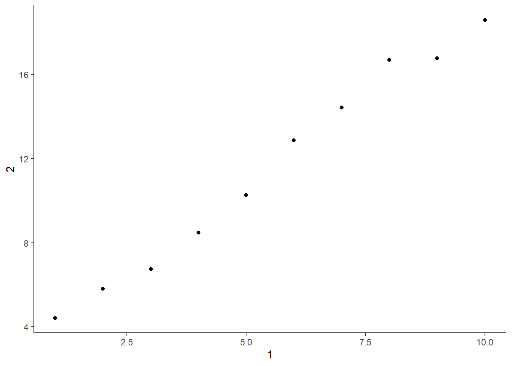

library(tidyverse)
library(gt)Chapter 8
Data Import
8.2.4 Exercises
Question 1
What function would you use to read a file where fields were separated with “|”?
Let us first create a data set with “|” delimiter. I used ChatGPT to create a random data set and named it as the data to be imported, i.e., imp_df .
I will use the function read_delim() to read a file where fields were separated with “|”, as shown below. The output is
#| label: tbl-q1-Ex-8.2.4
#| tbl-cap: "Imported data using read_delim() function"
import_df = "Name|Age|Gender|City|Salary
John|28|Male|New York|75000
Emily|22|Female|Los Angeles|60000
Michael|31|Male|Chicago|80000
Jessica|25|Female|Houston|65000
William|29|Male|Miami|70000
Sophia|27|Female|San Francisco|75000
Daniel|24|Male|Seattle|72000
Olivia|30|Female|Boston|78000
James|26|Male|Dallas|67000
Ava|23|Female|Atlanta|62000"
df = read_delim(import_df, delim = "|")
df |>
gt()| Name | Age | Gender | City | Salary |
|---|---|---|---|---|
| John | 28 | Male | New York | 75000 |
| Emily | 22 | Female | Los Angeles | 60000 |
| Michael | 31 | Male | Chicago | 80000 |
| Jessica | 25 | Female | Houston | 65000 |
| William | 29 | Male | Miami | 70000 |
| Sophia | 27 | Female | San Francisco | 75000 |
| Daniel | 24 | Male | Seattle | 72000 |
| Olivia | 30 | Female | Boston | 78000 |
| James | 26 | Male | Dallas | 67000 |
| Ava | 23 | Female | Atlanta | 62000 |
Note: The same read_delim() function will even work without the argument delim = "|" because it has in-built capacity to identify the delimiter.
Question 2
Apart from file, skip, and comment, what other arguments do read_csv() and read_tsv() have in common?
While read_csv() works for comma separated files, read_tsv() works for tab-separated files. The arguments for each of them are as follows:-
Arguments for read_csv
file,col_names = TRUE,col_types = NULL,col_select = NULL,id = NULL,locale = default_locale(),na = c("", "NA"),quoted_na = TRUE,quote = "\"",comment = "",trim_ws = TRUE,skip = 0,n_max = Inf,guess_max = min(1000, n_max),name_repair = "unique",num_threads = readr_threads(),progress = show_progress(),show_col_types = should_show_types(),skip_empty_rows = TRUE,lazy = should_read_lazy()
Arguments for read_tsv
file,col_names = TRUE,col_types = NULL,col_select = NULL,id = NULL,locale = default_locale(),na = c("", "NA"),quoted_na = TRUE,quote = "\"",comment = "",trim_ws = TRUE,skip = 0,n_max = Inf,guess_max = min(1000, n_max),name_repair = "unique",num_threads = readr_threads(),progress = show_progress(),show_col_types = should_show_types(),skip_empty_rows = TRUE,lazy = should_read_lazy()
Thus, all the arguments to both the functions are common, and have the exact same role.
Question 3
What are the most important arguments to read_fwf()?
The fixed width files are very fast to parse because each field will be in exact sample place in each line. However, this means, we must know the exact width of each column. Hence, the most important argument to read_fwf() is the cols_position = , which can take the following values:
fwf_empty()- Guesses based on the positions of empty columns.fwf_widths()- Supply the widths of the columns.fwf_positions()- Supply paired vectors of start and end positions.fwf_cols()- Supply named arguments of paired start and end positions or column widths.
Also, another important argument is cols_types which will tell whether each column will be of which class - character, integer, factor etc.
Here’s an example shown in Table 1 .
import_fwf_data = "John Smith 35 New York
Alice Johnson 28 Los Angeles
Michael Williams 42 Chicago"
df2 = read_fwf(
import_fwf_data,
col_positions = fwf_widths(c(8, 8, 3, 12))
)
colnames(df2) = c("Name", "Surname", "Age", "City")
df2 |>
gt()| Name | Surname | Age | City |
|---|---|---|---|
| John | Smith | 35 | New York |
| Alice | Johnson | 28 | Los Angeles |
| Michael | Williams | 42 | Chicago |
Question 4
Sometimes strings in a CSV file contain commas. To prevent them from causing problems, they need to be surrounded by a quoting character, like ” or ’. By default, read_csv() assumes that the quoting character will be “. To read the following text into a data frame, what argument to read_csv() do you need to specify?
"x,y\n1,'a,b'"To read a data above text into a data-frame, we will need to used the argument quote = "'" . Here’s an example in Table 2 .
import_quote = "x,y\n1,'a,b'"
read_csv(
import_quote,
quote = "'",
col_names = FALSE
) |>
gt()| X1 | X2 |
|---|---|
| x | y |
| 1 | a,b |
Question 5
Identify what is wrong with each of the following inline CSV files. What happens when you run the code?
read_csv("a,b\n1,2,3\n4,5,6"): This data is not rectangular, there are only two columns in first row, but three in other two rows. Thus,Rends up reading only two columns by default and joins the second and third column values for the two observations.read_csv("a,b\n1,2,3\n4,5,6")Warning: One or more parsing issues, call `problems()` on your data frame for details, e.g.: dat <- vroom(...) problems(dat)Rows: 2 Columns: 2 ── Column specification ──────────────────────────────────────────────────────── Delimiter: "," dbl (1): a num (1): b ℹ Use `spec()` to retrieve the full column specification for this data. ℹ Specify the column types or set `show_col_types = FALSE` to quiet this message.# A tibble: 2 × 2 a b <dbl> <dbl> 1 1 23 2 4 56read_csv("a,b,c\n1,2\n1,2,3,4"): This data is again not rectangular, there are three columns (column names) in first row, but two values in second row, and four in the third row. Thus,Rends up reading three columns by default, creates anNAand joins the second and third column values for the second row.read_csv("a,b,c\n1,2\n1,2,3,4")Warning: One or more parsing issues, call `problems()` on your data frame for details, e.g.: dat <- vroom(...) problems(dat)Rows: 2 Columns: 3 ── Column specification ──────────────────────────────────────────────────────── Delimiter: "," dbl (2): a, b num (1): c ℹ Use `spec()` to retrieve the full column specification for this data. ℹ Specify the column types or set `show_col_types = FALSE` to quiet this message.# A tibble: 2 × 3 a b c <dbl> <dbl> <dbl> 1 1 2 NA 2 1 2 34read_csv("a,b\n\"1"): This data is entered wrong, as the double quotes don’t match up in pairs, i.e., there are three double quotes ("), soRwill read only the data between first two, i.e,aandbas variable names, and the data-frame will be empty. An error with also be displayed, as shown below:---read_csv("a,b\n\"1")Rows: 0 Columns: 2 ── Column specification ──────────────────────────────────────────────────────── Delimiter: "," chr (2): a, b ℹ Use `spec()` to retrieve the full column specification for this data. ℹ Specify the column types or set `show_col_types = FALSE` to quiet this message.# A tibble: 0 × 2 # ℹ 2 variables: a <chr>, b <chr>read_csv("a,b\n1,2\na,b"): This data is rectangular, but the names of the columns are repeated in the second row, i.e. the second observation. Further, the data in each column is not of a single type, i.e. either<chr>or<dbl>or<int>etc. Thus, each column is not a variable, and each row is not an observation. The data is not tidy.read_csv("a,b\n1,2\na,b")Rows: 2 Columns: 2 ── Column specification ──────────────────────────────────────────────────────── Delimiter: "," chr (2): a, b ℹ Use `spec()` to retrieve the full column specification for this data. ℹ Specify the column types or set `show_col_types = FALSE` to quiet this message.# A tibble: 2 × 2 a b <chr> <chr> 1 1 2 2 a bread_csv("a;b\n1;3"): This data is wrong coded, i.e. it is not a comma-separated data, rather it is a semi-colon-separated data. Thus,read_csv()will end up readinga;bas a single string (i.e., column name) and the1;3as the single observation, i.e. first row. Instead, we should have usedread_csv2()here.read_csv("a;b\n1;3")Rows: 1 Columns: 1 ── Column specification ──────────────────────────────────────────────────────── Delimiter: "," chr (1): a;b ℹ Use `spec()` to retrieve the full column specification for this data. ℹ Specify the column types or set `show_col_types = FALSE` to quiet this message.# A tibble: 1 × 1 `a;b` <chr> 1 1;3Using
read_csv2(), the data is read-in correctly:---read_csv2("a;b\n1;3")# A tibble: 1 × 2 a b <dbl> <dbl> 1 1 3
Question 6
Practice referring to non-syntactic names in the following data frame by:
annoying <- tibble(
`1` = 1:10,
`2` = `1` * 2 + rnorm(length(`1`))
)
annoying# A tibble: 10 × 2
`1` `2`
<int> <dbl>
1 1 4.42
2 2 5.82
3 3 6.75
4 4 8.48
5 5 10.3
6 6 12.9
7 7 14.4
8 8 16.7
9 9 16.8
10 10 18.6 Extracting the variable called
1.annoying |> pull(`1`)[1] 1 2 3 4 5 6 7 8 9 10Plotting a scatterplot of
1vs.2.annoying |> ggplot(aes(x = `1`, y = `2`)) + geom_point() + theme_classic()
Creating a new column called
3, which is2divided by1.annoying = annoying |> mutate(`3` = `2` / `1`) annoying# A tibble: 10 × 3 `1` `2` `3` <int> <dbl> <dbl> 1 1 4.42 4.42 2 2 5.82 2.91 3 3 6.75 2.25 4 4 8.48 2.12 5 5 10.3 2.05 6 6 12.9 2.14 7 7 14.4 2.06 8 8 16.7 2.09 9 9 16.8 1.86 10 10 18.6 1.86Renaming the columns to
one,two, andthree.annoying |> rename( "one" = `1`, "two" = `2`, "three" = `3` )# A tibble: 10 × 3 one two three <int> <dbl> <dbl> 1 1 4.42 4.42 2 2 5.82 2.91 3 3 6.75 2.25 4 4 8.48 2.12 5 5 10.3 2.05 6 6 12.9 2.14 7 7 14.4 2.06 8 8 16.7 2.09 9 9 16.8 1.86 10 10 18.6 1.86
8.3 Controlling column types
Here’s an example data set to use the arguments col_types and na associated with the powerful read_csv() function.
raw_df1 = "Name,Age,Value,DateTime,Flag
John Doe,25,123.45,2023-08-07 10:30:00,True
Jane Smith,42,987.65,2023-08-06 15:45:00,False
Bob Johnson,32,543.21,2023-08-05 08:00:00,True
Mary Williams,28,.,2023-08-04 12:15:00,False
Michael Brown,,789.01,2023-08-03 18:30:00,True
Emily Davis,38,234.56,,False
David Lee,50,.,2023-08-01 09:45:00,True
.,22,345.67,2023-07-31 14:00:00,False"
read_csv(raw_df1)# A tibble: 8 × 5
Name Age Value DateTime Flag
<chr> <dbl> <chr> <dttm> <lgl>
1 John Doe 25 123.45 2023-08-07 10:30:00 TRUE
2 Jane Smith 42 987.65 2023-08-06 15:45:00 FALSE
3 Bob Johnson 32 543.21 2023-08-05 08:00:00 TRUE
4 Mary Williams 28 . 2023-08-04 12:15:00 FALSE
5 Michael Brown NA 789.01 2023-08-03 18:30:00 TRUE
6 Emily Davis 38 234.56 NA FALSE
7 David Lee 50 . 2023-08-01 09:45:00 TRUE
8 . 22 345.67 2023-07-31 14:00:00 FALSEHere, we see that by default, read_csv() does an amazing job. It identifies most column types, but fails to understand that “.” is a missing value in Value variable, which is otherwise numerical.
Let’s improve this behavior.
read_csv(
raw_df1,
na = "."
)# A tibble: 8 × 5
Name Age Value DateTime Flag
<chr> <dbl> <dbl> <dttm> <lgl>
1 John Doe 25 123. 2023-08-07 10:30:00 TRUE
2 Jane Smith 42 988. 2023-08-06 15:45:00 FALSE
3 Bob Johnson 32 543. 2023-08-05 08:00:00 TRUE
4 Mary Williams 28 NA 2023-08-04 12:15:00 FALSE
5 Michael Brown NA 789. 2023-08-03 18:30:00 TRUE
6 Emily Davis 38 235. NA FALSE
7 David Lee 50 NA 2023-08-01 09:45:00 TRUE
8 <NA> 22 346. 2023-07-31 14:00:00 FALSENow, let’s use col_types argument to force some variables into certain classes we desire. Here I will try to force Age into an integer, Value into a number (i.e., <dbl>), and DateTime into a character, and Flag into a character.
read_csv(
raw_df1,
na = ".",
col_types = list(
Name = col_character(),
Age = col_integer(),
Value = col_double(),
DateTime = col_character()
)
)# A tibble: 8 × 5
Name Age Value DateTime Flag
<chr> <int> <dbl> <chr> <lgl>
1 John Doe 25 123. "2023-08-07 10:30:00" TRUE
2 Jane Smith 42 988. "2023-08-06 15:45:00" FALSE
3 Bob Johnson 32 543. "2023-08-05 08:00:00" TRUE
4 Mary Williams 28 NA "2023-08-04 12:15:00" FALSE
5 Michael Brown NA 789. "2023-08-03 18:30:00" TRUE
6 Emily Davis 38 235. "" FALSE
7 David Lee 50 NA "2023-08-01 09:45:00" TRUE
8 <NA> 22 346. "2023-07-31 14:00:00" FALSENow, I will try to read-in only a few columns to save on memory space in R by using col_skip().
read_csv(
raw_df1,
na = ".",
col_types = list(
Name = col_character(),
Age = col_integer(),
Value = col_double(),
DateTime = col_skip(),
Flag = col_skip()
)
)# A tibble: 8 × 3
Name Age Value
<chr> <int> <dbl>
1 John Doe 25 123.
2 Jane Smith 42 988.
3 Bob Johnson 32 543.
4 Mary Williams 28 NA
5 Michael Brown NA 789.
6 Emily Davis 38 235.
7 David Lee 50 NA
8 <NA> 22 346.Now, I will repeat this using cols_only() function:---
read_csv(
raw_df1,
na = ".",
col_types = cols_only(
Name = col_character(),
Age = col_integer(),
Value = col_double())
)# A tibble: 8 × 3
Name Age Value
<chr> <int> <dbl>
1 John Doe 25 123.
2 Jane Smith 42 988.
3 Bob Johnson 32 543.
4 Mary Williams 28 NA
5 Michael Brown NA 789.
6 Emily Davis 38 235.
7 David Lee 50 NA
8 <NA> 22 346.Now, let’s try to read-in data from three different files at the same time..
read_csv(
c(
"https://pos.it/r4ds-01-sales",
"https://pos.it/r4ds-02-sales",
"https://pos.it/r4ds-03-sales"
),
na = ".",
id = "file"
) |>
slice_head(n = 5)# A tibble: 5 × 6
file month year brand item n
<chr> <chr> <dbl> <dbl> <dbl> <dbl>
1 https://pos.it/r4ds-01-sales January 2019 1 1234 3
2 https://pos.it/r4ds-01-sales January 2019 1 8721 9
3 https://pos.it/r4ds-01-sales January 2019 1 1822 2
4 https://pos.it/r4ds-01-sales January 2019 2 3333 1
5 https://pos.it/r4ds-01-sales January 2019 2 2156 9